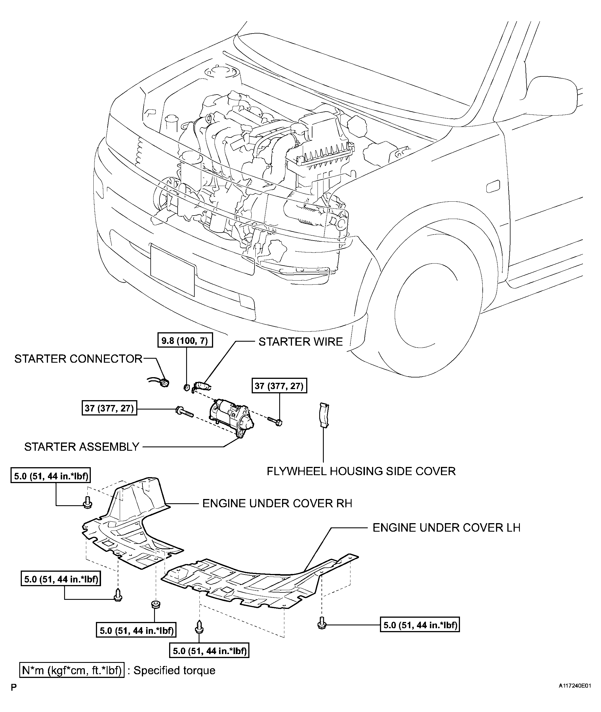
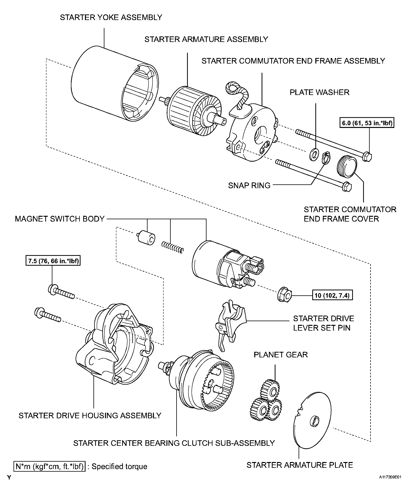

Starting (1NZ-FE): Starter: Components
Fig 1: Locating Starter Components

Courtesy of © TOYOTA, LICENSE AGREEMENT TMS1002
Fig 2: Exploded View Of Starter Assembly

Courtesy of © TOYOTA, LICENSE AGREEMENT TMS1002